| Sistem | BoothPOS (varian restoran) — web back-office |
| Tanggal | 7 November 2026 |
| Cakupan fitur | Spesifikasi 087–093 (stok bahan, modifier, resep, stok menu berbasis resep, produk sebagai bahan) |
| Pembaca | Pemilik, administrator, dan staf operasional yang mengelola stok |
Peran dalam dokumen ini: ADMIN pemilik/admin — konfigurasi awal dan perubahan struktur; STAF staf operasional (peran Inventory) — pembelian, penerimaan, pemantauan harian; KEDUANYA.
Urutan bab mengikuti urutan kerja yang benar (material → vendor → produk → modifier → resep → stok awal → PO → penjualan → pemantauan), bukan urutan menu di sidebar. Di sidebar, Material dan Vendor ada di menu Purchase, sedangkan Produk dan Stok ada di Inventory; modifier ada di Restaurant → Restaurant Setup.
Sistem stok BoothPOS mencatat setiap perubahan stok sebagai riwayat yang tidak dihapus (menu Inventory → Stock, subjudul “Every stock change is recorded and auditable”). Saldo adalah jumlah dari riwayat itu, dihitung per outlet.
| Stok Produk | Stok Material | |
|---|---|---|
| Apa itu | Jumlah barang jadi yang dijual, dihitung per varian (mis. satu botol minuman). | Jumlah bahan/pendukung yang dipakai membuat menu (mie, telur, sayur, kemasan). |
| Dibuat di | Inventory → Products | Purchase → Materials |
| Riwayat di | Inventory → Stock, tab Products | Inventory → Stock, tab Materials |
| Bertambah lewat | Stock adjustment, impor Excel, transfer antar-outlet | Penerimaan PO (status Received), Adjust stock, impor Excel |
| Berkurang saat | Pesanan selesai (menu stok varian) | Pesanan selesai yang memakai resep atau pilihan modifier bertaut bahan |
| Jenis | Siapa yang menyimpan angkanya | Bagaimana dibaca |
|---|---|---|
| Stok produk (varian) | Saldo varian (kolom STOCK di form produk) | Dikurangi saat varian terjual. Hanya untuk varian yang Track stock-nya menyala dan tidak berresep. |
| Stok berbasis resep | Tidak ada saldo sendiri — dihitung dari saldo bahan resep | “Porsi tersedia” = bahan paling terbatas (Bab 4.A). |
| Stok berbasis modifier | Saldo bahan yang tertaut ke pilihan modifier | Dikurangi saat pilihan itu dipesan dan pesanan selesai. |
| Stok produk-sebagai-bahan | Saldo varian produk itu (satu saldo bersama) | Dikurangi baik oleh penjualan langsung maupun pemakaian di resep produk lain. |
Setiap langkah bergantung pada langkah sebelumnya. Jangan melompat: resep tidak bisa dibuat sebelum bahannya ada, PO tidak bisa dibuat sebelum vendor dan bahannya ada.
| Aktivitas | Stok Produk | Stok Material |
|---|---|---|
| Terima PO (status Received) | Tidak berubah (PO hanya memuat baris Material dan Service) | Bertambah, di outlet PO |
| Jual produk berresep | “Porsi tersedia” turun (dihitung ulang) | Bahan resep berkurang saat pesanan selesai |
| Jual produk dengan pilihan modifier bertaut bahan | Tergantung Stock source produk (Bab 3.B) | Bahan pilihan berkurang (jumlah × qty pilihan × qty baris) |
| Produk dipakai sebagai bahan | Saldo bersama berkurang | Tidak ada saldo material ganda |
| Void / refund pesanan | Kembali sesuai riwayat | Kembali sesuai riwayat (bukan resep saat ini) |
| Konsep | Arti di aplikasi | Contoh restoran |
|---|---|---|
| Product | Item menu yang dijual (tab Menu items; ada juga Raw materials, Semi-finished, Packaging, Retail items, Modifiers & combos). | Indomie Kuah, Rp 8.000 |
| Variant | Varian satu produk, masing-masing punya SKU, harga, stok, status Active. Produk tanpa varian tetap punya satu varian bernama Standard. | Ayam Penyet / Ayam Bakar; ukuran |
| Modifier | Grup pilihan tambahan (Choose one / beberapa), dengan aturan Must be chosen, min/max qty, selisih harga, dan Materials used (bahan yang terpotong bila dipilih). | Rasa Kuah: Soto, Ayam Bawang, Kari Ayam |
| Material | Bahan atau barang pendukung dengan Kind (Raw material, Semi-finished, Packaging) dan Unit. Dibeli lewat PO. | Telur (butir), Sayur (gram) |
| Recipe | Daftar bahan per porsi untuk satu varian, boleh dipecah per pilihan modifier (blok). Satu varian boleh punya banyak resep aktif; semuanya dijumlahkan. | 1 Indomie + 1 Telur + 50 g Sayur |
| Use as ingredient | Penanda produk agar variannya bisa dipilih sebagai bahan di resep produk lain, dengan satu saldo bersama. | Telur yang juga dijual satuan |
| Vendor | Pemasok. Harga per material disimpan di Vendor prices; vendor Preferred menjadi acuan harga modal. | Toko Grosir A |
| Purchase Order | Dokumen pembelian: vendor + outlet + baris Material/Service. Status: Draft → Ordered → Received → Paid (atau Cancelled). | PO 50 butir telur |
ADMIN Seluruh bab ini dikerjakan sekali di awal dan diubah bila menu berubah. Urutannya wajib: A → B → C → D (modifier dibuat sebelum resep bermodifier).
Menu: Purchase → Materials · ADMIN
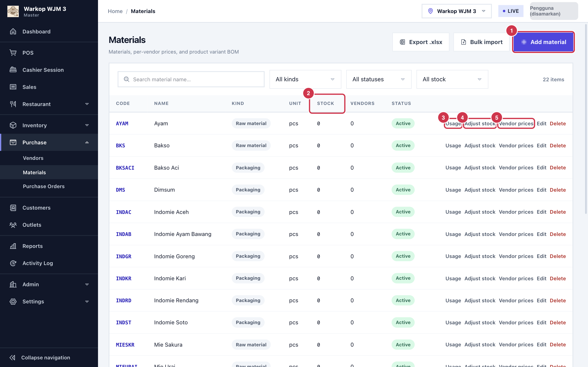
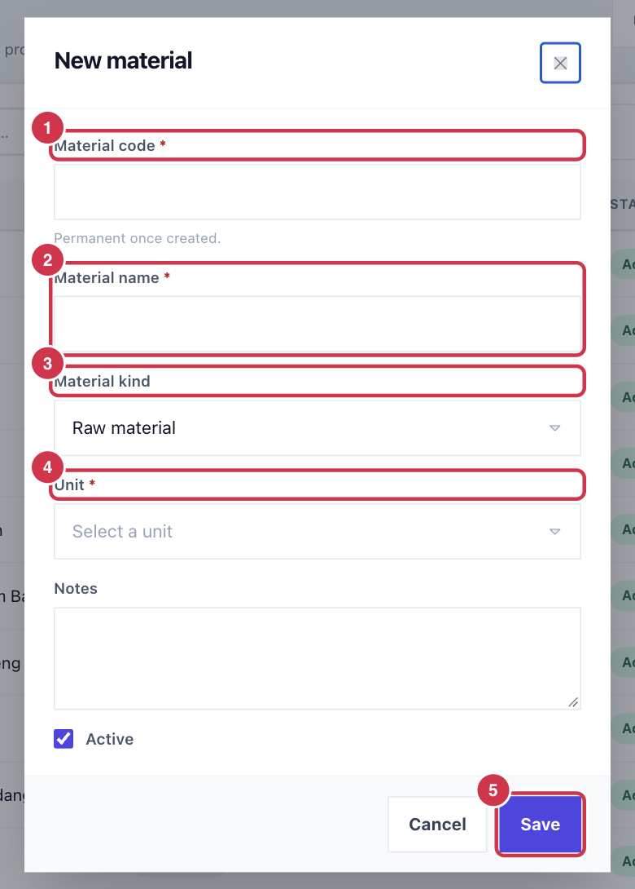
Klik Adjust stock (4) pada baris material.
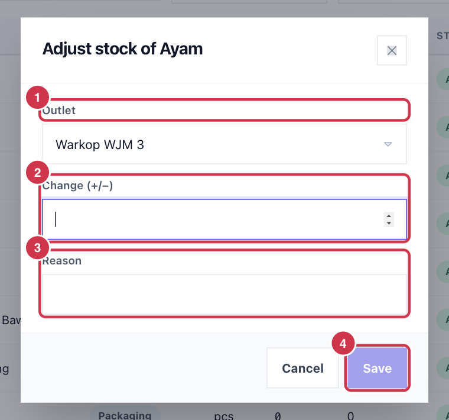
| Aktivitas | Stok Produk | Stok Material (contoh ILUSTRASI) |
|---|---|---|
| Adjust stock Telur, Change +50, Reason “Stok awal” | Tidak berubah | 0 → 50 butir (riwayat tipe Adjustment, tertulis “sebelum → sesudah”) |
| Adjust stock Telur, Change −60 saat saldo 50 | — | Ditolak: pengurangan manual tidak boleh membuat saldo minus |
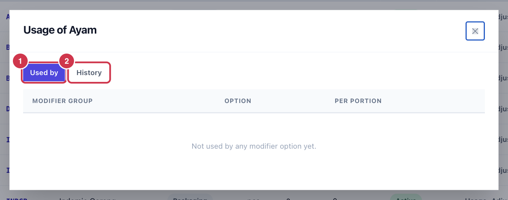
Menu: Inventory → Products · ADMIN (peran Inventory juga memegang menu Products)
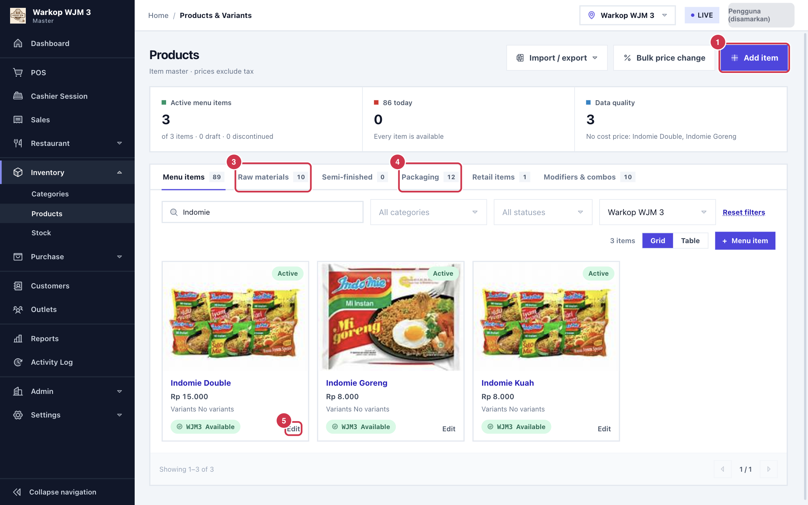
| Tanpa varian | Dengan varian | |
|---|---|---|
| Struktur | Satu varian Standard otomatis | Beberapa varian, masing-masing SKU + harga + stok sendiri |
| Stok (jika Track stock) | Satu saldo | Satu saldo per varian |
| Cocok untuk | Menu satu ukuran | Ukuran, jenis kemasan, paket |
Di form Edit item tiap varian punya: COST PRICE, BASE PRICE, STOCK, ACTIVE, Low-stock alert, dan kotak Track stock. Varian yang pernah terjual atau punya stok hanya bisa dinonaktifkan; yang belum punya riwayat boleh dihapus permanen (ikon tempat sampah).
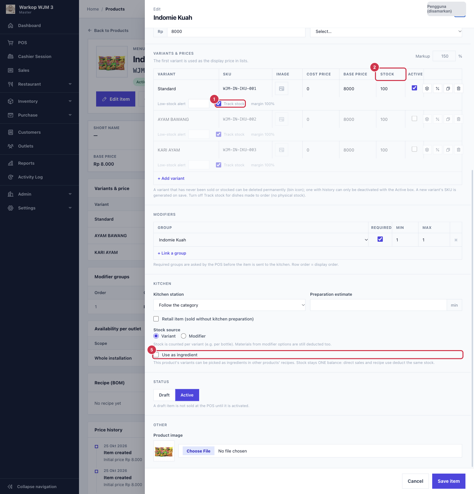
| Pengaturan | Arti | Dampak ke stok |
|---|---|---|
| Track stock (per varian) | Varian punya saldo stok | Mati = menu “dibuat saat dipesan”, tidak ada stok fisik dan tidak ada penolakan karena stok. |
| Stock source = Variant | Stok dihitung per varian (bawaan) | Saldo varian berkurang saat terjual; bahan pilihan modifier tetap ikut terpotong. |
| Stock source = Modifier | Stok varian dihentikan | Hanya bahan pilihan modifier yang dipotong; angka kartu POS menampilkan perkiraan porsi dari saldo bahan pilihan (tidak pernah memblokir penjualan). |
| Use as ingredient | Varian produk boleh dipilih di resep produk lain | Satu saldo bersama (Bab 4.C, Contoh 3). |
| Retail item | Dijual tanpa dapur | Tidak mengubah cara stok. |
Syarat dan larangan (dari spesifikasi 093; pesan galat sistem dalam kurung):
recipe_ingredient_recursive, 422).recipe_ingredient_whole_quantity, 422).ingredient_in_use, 409).Menu: Inventory → Products → (pilih produk) → bagian Recipe (BOM) → Add recipe · ADMIN / pemegang izin menu.recipe.edit
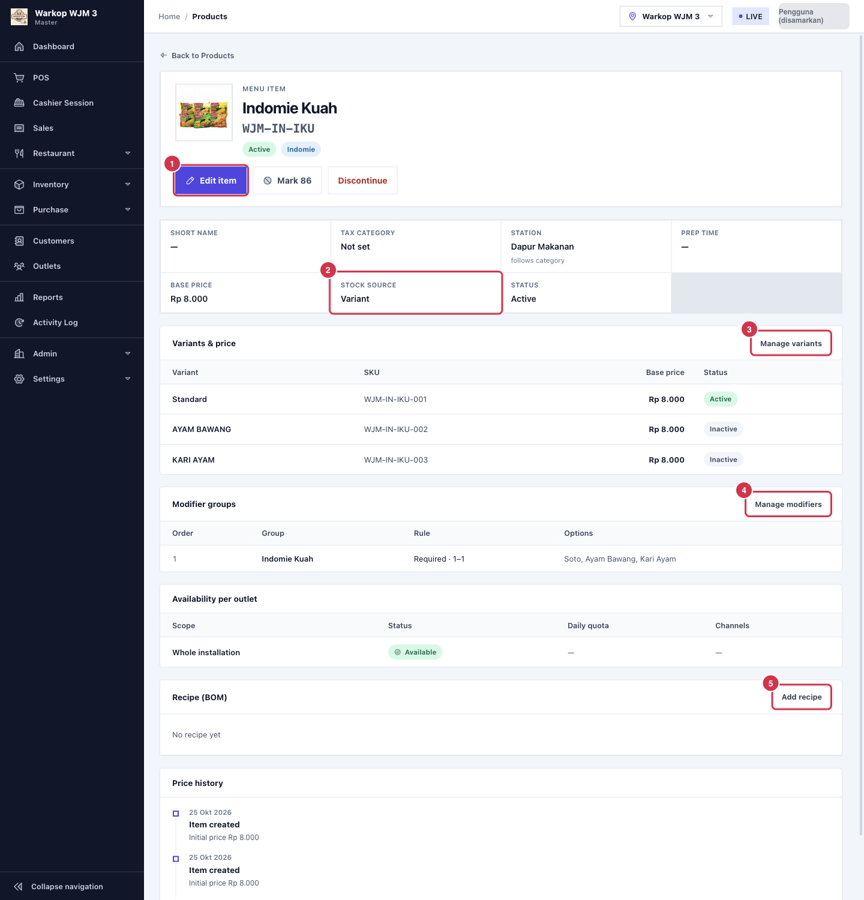
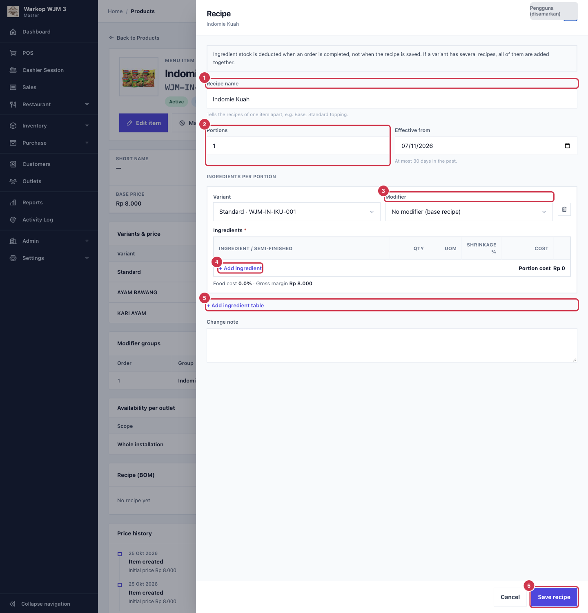
| Hal | Aturan |
|---|---|
| Kebutuhan per porsi | jumlah ÷ (1 − susut%) ÷ Portions. Rumus yang sama dipakai untuk menghitung kapasitas dan memotong stok. |
| Kapan stok dipotong | Saat pesanan selesai (laci Recipe menuliskannya: “Ingredient stock is deducted when an order is completed, not when the recipe is saved”). |
| Beberapa bahan | Semua baris dipotong sekaligus; porsi tersedia ditentukan bahan paling terbatas. |
| Beberapa resep pada satu varian | Semua resep aktif dijumlahkan (kebutuhan dan harga modal). |
| Blok bermodifier | Hanya dipotong bila pilihan itu dipesan (× jumlah pilihan). Blok ini tidak ikut menghitung porsi tersedia di kartu menu — hanya blok dasar. |
| Tanggal berlaku | Effective from: resep baru mulai berlaku pada tanggal itu (boleh mundur paling lama 30 hari). |
| Biaya | Laci menampilkan Portion cost, Food cost, Gross margin. Bila ada bahan tanpa harga: “Cost is incomplete…”; biaya baru lengkap setelah Vendor prices terisi (Bab 5). |
| Aktivitas | Stok Produk | Stok Material ILUSTRASI |
|---|---|---|
| Simpan resep | Kartu menu memakai “porsi tersedia”; saldo varian tidak lagi dipakai (kapan persisnya saldo lama dinolkan: belum terverifikasi) | Tidak berubah |
| Jual 1 Indomie Kuah (selesai) | Porsi tersedia turun | Indomie −1, Telur −1, Sayur −50 g |
| Varian | Modifier | |
|---|---|---|
| Sifat | Barang/ukuran yang berbeda, punya SKU dan harga dasar sendiri | Pilihan tambahan atau kustomisasi pada satu barang yang sama |
| Stok | Saldo sendiri per varian (bila Track stock dan tanpa resep) | Tidak punya saldo; hanya memotong bahan yang tertaut |
| Harga | Base price per varian | Price difference (Rp) per pilihan (boleh 0 atau negatif) |
| Contoh | Ayam Penyet / Ayam Bakar | Rasa Kuah, Level Pedas, Suhu Minuman |
Aturan praktis: bila pelanggan memilih barang yang berbeda dan Anda ingin saldo stoknya terpisah → varian. Bila pilihan itu hanya menentukan bahan apa yang terpakai pada menu yang sama → modifier.
Menu: Restaurant → Restaurant Setup → tab Modifiers · ADMIN
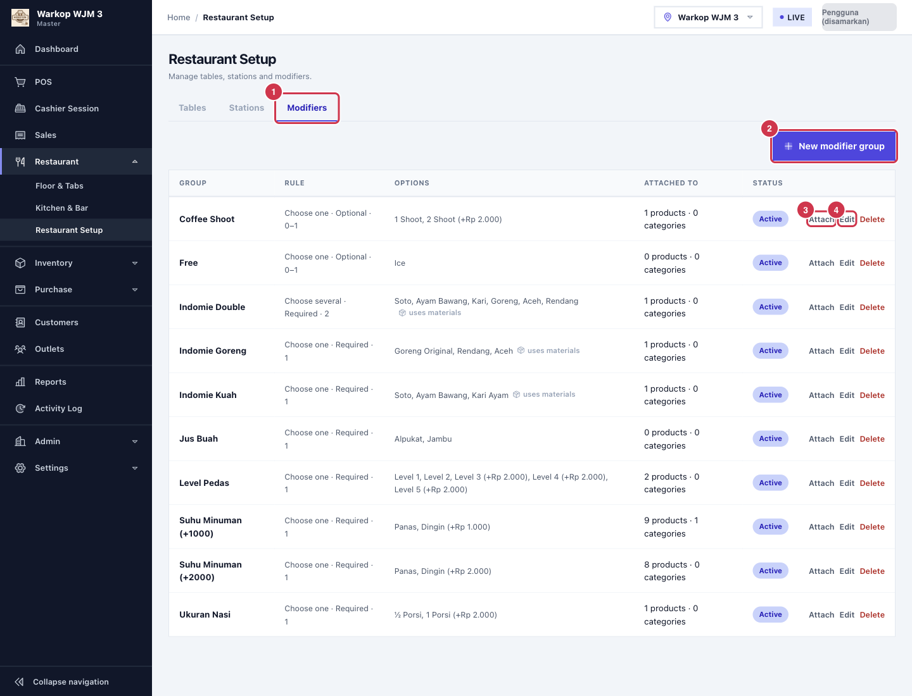
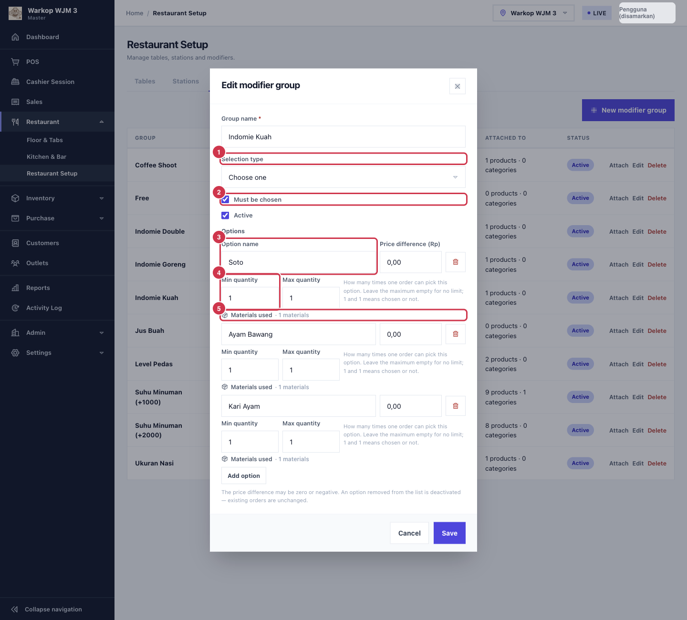
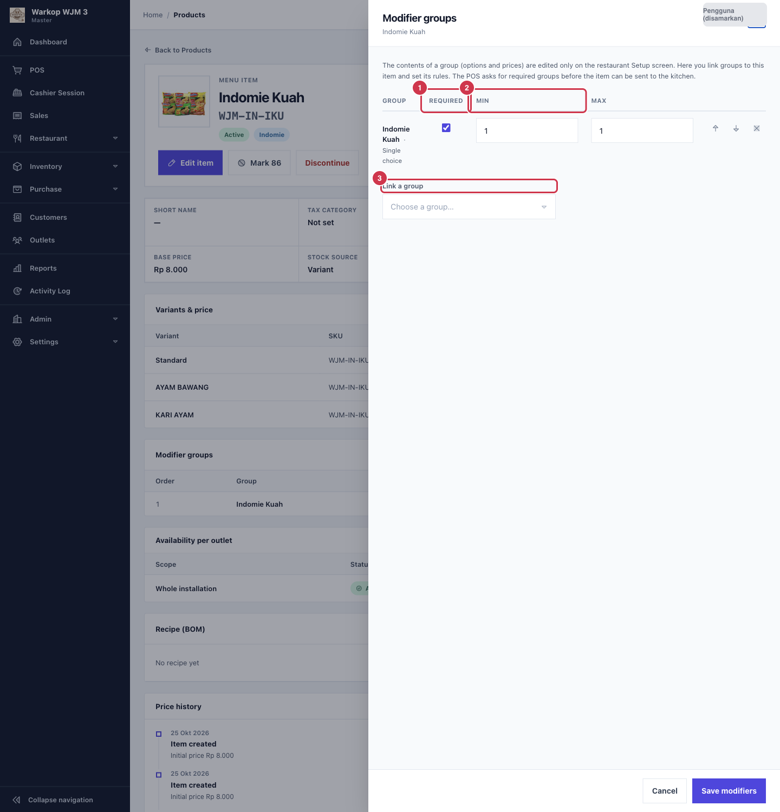
material_warnings). Berbeda dengan bahan resep yang menolak pesanan (Bab 4.A).| Aktivitas | Stok Produk | Stok Material ILUSTRASI |
|---|---|---|
| Jual 1 Indomie Kuah rasa Soto | Tergantung Stock source (Variant/Modifier) | Hanya bahan yang tertaut ke “Soto” berkurang |
| Hapus bahan yang masih dipetakan pilihan aktif | — | Ditolak (409) |
| Stok manual (varian) | Stok berbasis resep | |
|---|---|---|
| Kondisi | Varian tanpa resep, Track stock menyala | Varian punya resep aktif |
| Sumber angka | Saldo varian (kolom STOCK) | Dihitung dari bahan blok dasar resep |
| Cara berubah | Adjustment, impor, transfer, penjualan | Berubah mengikuti saldo bahan |
| Bila tidak cukup | Ditolak 409 (stok tidak cukup) | Ditolak 409 insufficient_recipe_stock |
porsi tersedia = min atas semua bahan dari lantai((saldo outlet − tahanan) ÷ kebutuhan per porsi)
Tahanan = kebutuhan resep seluruh pesanan yang masih terbuka (tab belum selesai) di outlet yang sama. Tahanan mencegah dua tab sama-sama “mengambil” sisa bahan yang sama sebelum salah satunya selesai. Angka porsi dikirim server ke kartu POS (web dan Android); klien tidak menghitung ulang, jadi angka web dan tablet identik.
Buku besar bahan ada di Inventory → Stock → tab Materials; riwayat produk di tab Products.
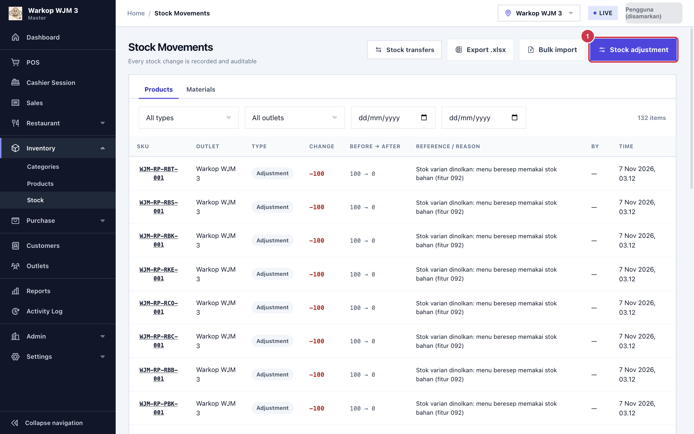
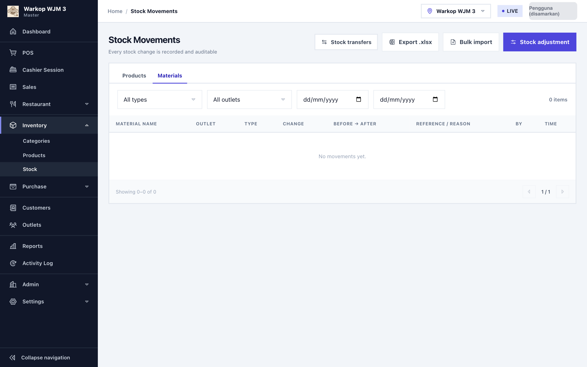
| Peristiwa | Tipe riwayat bahan | Arah |
|---|---|---|
| PO diterima | purchase | + (di outlet PO) |
| Pesanan selesai (resep atau modifier) | sale | − (boleh jadi minus) |
| Void / refund | return | + (sesuai riwayat jual) |
| Dibatalkan sebagai waste | waste | − (boleh jadi minus) |
| Adjust stock | adjustment | + atau − (− tidak boleh sampai minus) |
| Pindah antar-outlet | belum terverifikasi untuk bahan | Fitur Stock transfers ada di Inventory → Stock; apakah mencakup bahan belum dipastikan |
Produk sebagai bahan tidak punya baris di buku besar material; pemakaiannya tercatat di riwayat produk dengan tipe Used as ingredient (recipe_sale), memuat nomor pesanan dan “untuk {menu}”.
ILUSTRASI Semua angka di bawah adalah contoh; rumusnya identik dengan aplikasi.
Resep 1 porsi: Indomie 1 bungkus, Telur 1 butir, Sayur 50 gram. Saldo awal outlet: Indomie 40, Telur 25, Sayur 1.200 gram.
| Bahan | Saldo | Kebutuhan/porsi | lantai(saldo ÷ kebutuhan) |
|---|---|---|---|
| Indomie | 40 bungkus | 1 | 40 |
| Telur | 25 butir | 1 | 25 |
| Sayur | 1.200 g | 50 | 24 ← paling terbatas |
Porsi tersedia = min(40, 25, 24) = 24, dibatasi Sayur (kartu menampilkan “Limited by: Sayur”).
| Peristiwa | Indomie | Telur | Sayur | Porsi tersedia |
|---|---|---|---|---|
| Awal | 40 | 25 | 1.200 | 24 |
| Tab terbuka: 2 porsi (belum selesai) | 40 (tahanan 2) | 25 (tahanan 2) | 1.200 (tahanan 100) | min(38, 23, 22) = 22 |
| Tab itu selesai | 38 | 23 | 1.100 | 22 |
| Jual 3 porsi lagi (selesai) | 35 | 20 | 950 | 19 |
Grup modifier “Rasa Kuah” (Choose one, Must be chosen) dengan tiga opsi: Soto → bahan Indomie Soto, Ayam Bawang → Indomie Ayam Bawang, Kari Ayam → Indomie Kari; masing-masing 1 bungkus per porsi. (Nama bahan di contoh mengikuti daftar Materials pada Gambar 3.1; pemetaan tepatnya per opsi belum terverifikasi dari layar.) Saldo awal: Soto 10, Ayam Bawang 8, Kari 6.
| Pesanan selesai | Indomie Soto | Indomie Ayam Bawang | Indomie Kari |
|---|---|---|---|
| Awal | 10 | 8 | 6 |
| 2 × Indomie Kuah rasa Soto | 8 | 8 | 6 |
| 1 × Indomie Kuah rasa Kari Ayam | 8 | 8 | 5 |
| Ayam Bawang tidak dipesan | 8 | 8 (tidak berubah) | 5 |
Rumus potongan: jumlah bahan × qty pilihan × qty baris (2 porsi × 1 = 2 untuk Soto). Bila Soto tinggal 1 dan pelanggan memesan 3, pesanan tetap diterima, Soto menjadi −2, dan kasir melihat peringatan stok minus. Pantau bahan minus di Reports → Materials (status Negative).
Produk Indomie Goreng (stok 100 bungkus) dan Telur (stok 200 butir) keduanya ditandai Use as ingredient dan juga dijual satuan. Resep Indomie Kuah (1 porsi): 1 Indomie Goreng + 1 Telur (produk, bukan material).
| Peristiwa | Indomie Goreng | Telur | Catatan |
|---|---|---|---|
| Awal | 100 | 200 | Kartu Indomie Kuah = 100 (dibatasi Goreng) |
| Jual 1 Indomie Kuah (selesai) | 99 | 199 | Riwayat Telur: Used as ingredient −1 “untuk Indomie Kuah” + nomor pesanan |
| Jual 3 Telur langsung | 99 | 196 | Riwayat Telur: sale −3 |
| Tab terbuka berisi 5 Indomie Kuah | 94 tersedia | 191 tersedia untuk penjualan langsung | Tahanan juga menjaga penjualan langsung |
| Coba jual langsung 192 Telur | Ditolak 409 insufficient_stock_reserved | ||
| Tab itu di-void | kembali | kembali | Kembali sesuai riwayat, walau resep diubah |
Menu: Purchase → Vendors · ADMIN membuat; STAF memakai
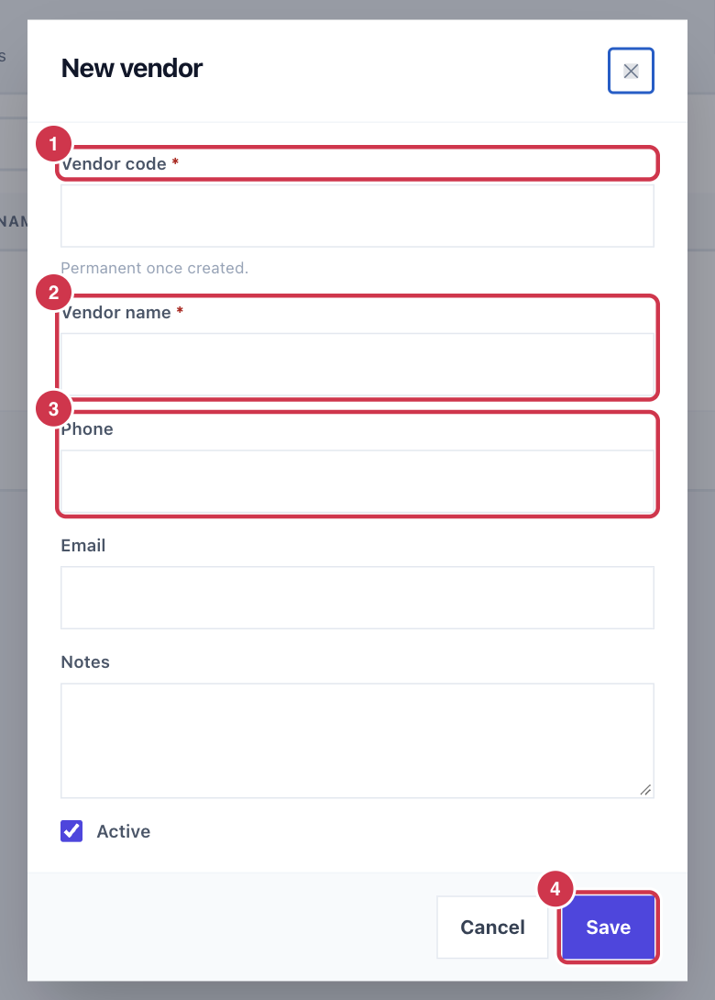
Tidak ada layar “vendor → daftar material”. Keterkaitan dibuat dari sisi material: Purchase → Materials → Vendor prices pada material tersebut → Add vendor price (vendor + harga).
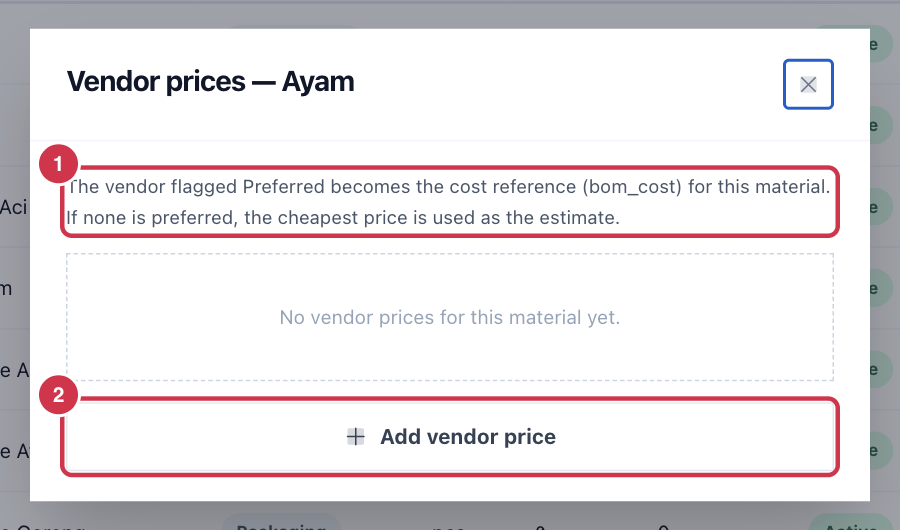
| Informasi vendor | Dipakai untuk |
|---|---|
| Vendor + harga per material | Harga modal bahan di resep (Portion cost, Food cost), dan pembuatan draft PO otomatis dari Reports → Materials (baris tanpa harga vendor ditolak per baris dengan alasan no_vendor) |
| Vendor di PO | Header PO; satu PO = satu vendor |
Riwayat per vendor berupa daftar PO: Purchase → Purchase Orders, filter status. Rekap pembelian ada di Reports → tab Purchases.
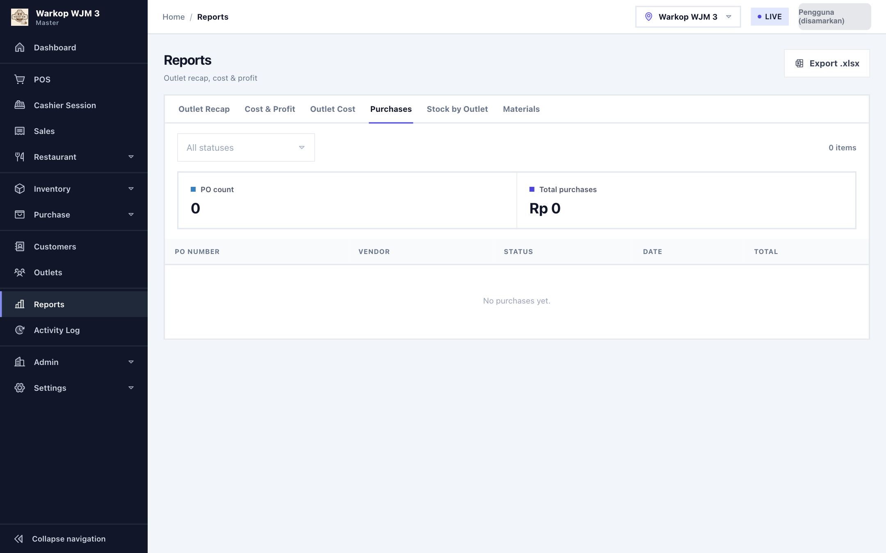
Menu: Purchase → Purchase Orders · STAF membuat dan menerima · hak mengubah status oleh peran Inventory belum terverifikasi
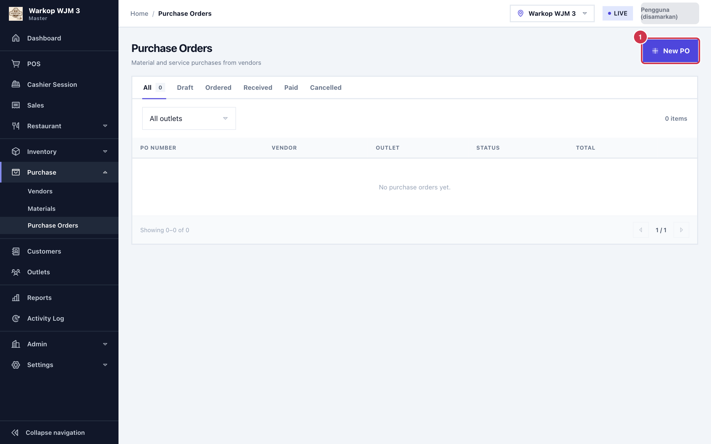
Draft dan Ordered dapat dibatalkan (Cancelled, dengan alasan). Dari Received hanya bisa ke Paid; dari Paid atau Cancelled tidak ada lanjutan.
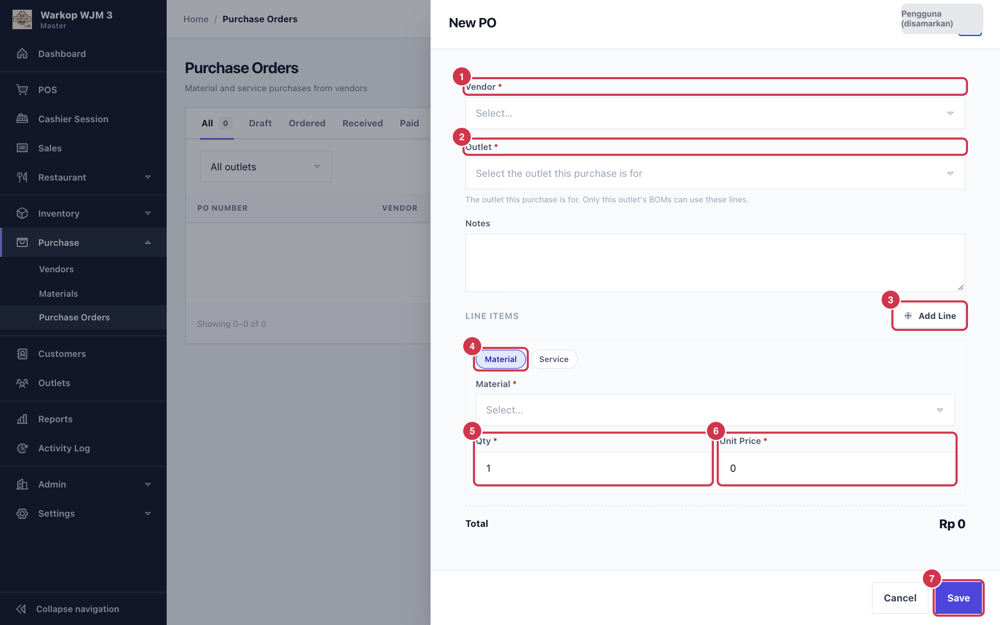
| Aktivitas ILUSTRASI | Stok Produk | Stok Material |
|---|---|---|
| PO Draft 50 butir Telur @ Rp 2.000, status Ordered | — | Tidak berubah (barang belum datang) |
| Status Received | Tidak berubah | Telur 25 → 75 di outlet PO |
| Baris Service (mis. ongkir) | — | Tidak ada pergerakan stok |
PO yang sudah Received dapat dicatat pembayarannya; saat total terbayar ≥ total PO, status otomatis menjadi Paid. PO tidak boleh dihapus bila sudah ada pembayaran atau sudah dipakai sebagai sumber BOM; hanya status Draft yang dapat dihapus.
STAF Peran Inventory memegang menu Products, Stock, Vendors, Materials, dan Purchase Orders. Menu Reports tidak termasuk peran Inventory (menu Reports hanya untuk Owner/Admin); staf memantau lewat daftar Materials dan Stock, atau meminta Admin membuka Reports → Materials.
| # | Langkah | Cara | Peran |
|---|---|---|---|
| 1 | Pilih outlet yang benar | Bilah atas → pemilih outlet. Semua saldo yang tampil adalah saldo outlet itu. | KEDUANYA |
| 2 | Cek stok produk dan bahan | Materials (kolom STOCK) dan Products (kartu produk, “WJM3 Available”); detail di Stock. | STAF |
| 3 | Pantau ketersediaan bahan | Di POS, kartu menu berresep menampilkan porsi tersedia dan bahan pembatas (“Limited by …”). | STAF |
| 4 | Kenali bahan menipis | Reports → Materials → Position & risk: status Negative / Out / Running out / OK / Unused. “Running out” = sisa hari < ambang (bawaan 3 hari; Usage 7 hari; target stok 7 hari). | ADMIN (Reports) |
| 5 | Beli ke vendor | Buat PO manual (Bab 6) atau tombol Create draft POs di laporan (draft per vendor, perlu satu outlet terpilih dan harga vendor). | STAF |
| 6 | Terima barang | Ubah PO ke Received; cek baris purchase di Stock → Materials. | STAF |
| 7 | Pantau pemotongan dari penjualan | Stock → Materials/Products: tipe sale / Used as ingredient, referensi nomor pesanan. | STAF |
| 8 | Periksa konsistensi | Bandingkan saldo di Materials dengan baris BEFORE → AFTER terakhir di Stock; saldo sama dengan jumlah riwayat. | STAF |
| 9 | Tangani selisih fisik | Adjust stock (material) atau Stock adjustment (produk) dengan Reason yang jelas; tidak ada hapus riwayat, hanya koreksi tercatat. | STAF / ADMIN |
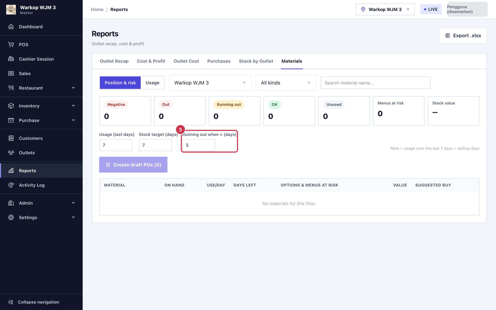
| Tugas | ADMIN | STAF |
|---|---|---|
| Buat material, vendor, produk, grup modifier, resep | Ya | Resep: dengan izin menu.recipe.edit (peran Inventory memilikinya); produk/material/vendor: menu tersedia, kebijakan internal menentukan |
| Buat PO, ubah ke Received | Ya | Buat PO: ya (menu Purchase Orders). Ubah status: belum terverifikasi |
| Reports → Materials, Create draft POs | Ya | Tidak (menu Reports) |
| Adjust stock / Stock adjustment | Ya | Ya (menu Stock dan Materials) |
ILUSTRASI Seluruh angka adalah contoh hitungan; tidak ada data yang dibuat di sistem untuk bab ini. Screenshot langkah yang relevan sudah ada di bab sebelumnya dan dirujuk di kolom kanan.
Skenario: Warkop menjual Indomie Kuah dengan modifier Rasa Kuah (Soto / Ayam Bawang / Kari Ayam). Resep dasar: 1 Indomie (sesuai rasa lewat modifier) + 1 Telur + 50 g Sayur. Telur juga dijual satuan.
| # | Langkah | Isian kunci | Rujukan |
|---|---|---|---|
| 1 | Buat material | Sayur (gram, Raw material); Indomie Soto/Ayam Bawang/Kari (bungkus, Packaging) | Gbr 3.1–3.2 |
| 2 | Buat vendor | “Toko Grosir A” + Vendor prices: Sayur Rp 20/gram (Preferred) | Gbr 5.1–5.2 |
| 3 | Konfigurasi produk | Indomie Kuah, Rp 8.000, varian Standard, Stock source = Variant | Gbr 3.5–3.6 |
| 4 | Varian & modifier | Grup “Rasa Kuah” (Choose one, Must be chosen), 3 opsi, tiap opsi → 1 bungkus Indomie rasa itu; Link ke produk | Gbr 3.9–3.11 |
| 5 | Produk sebagai bahan | Telur: Use as ingredient dinyalakan (stok 200 butir, bukan material) | Gbr 3.6 |
| 6 | Buat resep | Blok dasar: Telur (produk) 1, Sayur (material) 50 gram; Portions 1 | Gbr 3.8 |
| 7 | Hitung porsi awal | Sayur 1.200 g (via Adjust stock), Telur 200: min(200, 24) = 24 porsi | Bab 4.C |
| 8 | Buat PO | PO Sayur 1.000 gram @ Rp 20, outlet WJM 3, Draft → Ordered | Gbr 6.2 |
| 9 | Terima PO | Received: Sayur 1.200 → 2.200 | Bab 6.3 |
| 10 | Transaksi POS | 5 × Indomie Kuah: 3 Soto, 2 Kari (satu pesanan selesai) | — |
| 11 | Verifikasi potongan | Lihat tabel di bawah | Gbr 4.1–4.2 |
| 12 | Saldo akhir | Lihat tabel di bawah | Gbr 7.1 |
| Tahap | Sayur (g) | Telur | Indomie Soto | Indomie Kari | Porsi tersedia |
|---|---|---|---|---|---|
| Setelah stok awal (langkah 7) | 1.200 | 200 | 20 | 20 | 24 (Sayur) |
| PO dibuat / Ordered (langkah 8) | 1.200 | 200 | 20 | 20 | 24 |
| PO Received (langkah 9) | 2.200 | 200 | 20 | 20 | 44 (Sayur 2.200÷50) |
| Pesanan 5 porsi selesai (langkah 10) | 2.200 − 250 = 1.950 | 200 − 5 = 195 | 20 − 3 = 17 | 20 − 2 = 18 | 39 (1.950÷50) |
| Yang bergerak (langkah 10) | Stok Produk | Stok Material | Riwayat |
|---|---|---|---|
| Resep dasar | Telur 200 → 195 (saldo bersama) | Sayur −250 g | Telur: Used as ingredient −5; Sayur: sale −250 |
| Modifier | — | Soto −3, Kari −2 | sale pada masing-masing bahan |
| Masalah | Kemungkinan penyebab | Solusi |
|---|---|---|
| Stok produk tidak cocok dengan ketersediaan bahan | Varian beresep memakai porsi hitungan, bukan saldo varian; ada tahanan dari tab terbuka; resep hanya blok dasar yang dihitung. | Baca “Limited by” di kartu; cek tab terbuka di outlet itu; pastikan outlet yang dilihat benar. |
| Stok material tidak berkurang setelah penjualan | Pesanan masih tab terbuka (potong saat selesai); produk tanpa resep dan modifier tanpa bahan; atau varian dengan Track stock mati. | Selesaikan pesanan; buka Stock → Materials untuk baris sale; periksa Materials used dan Recipe. |
| Pilihan modifier tidak memotong bahan yang diharapkan | Materials used opsi itu kosong atau salah bahan; grup belum di-Link ke produk; nama bahan mirip tertukar. | Materials → Usage → Used by untuk melihat opsi yang memakai bahan; perbaiki di Restaurant Setup → Edit modifier group. |
| Stok produk berresep salah | Beberapa resep aktif terjumlah; Effective from di masa depan; satuan bahan (gram vs kg) salah; resep arsip hasil migrasi. | Periksa daftar resep di halaman detail; cek satuan UOM; ubah resep di tempat (tidak ada versi baru). |
| Produk bertanda bahan punya stok “aneh” | Saldo dipakai ganda oleh penjualan langsung dan resep; tahanan dari tab terbuka; stok awal diisi dua kali (produk dan material). | Pakai satu saldo; telusuri riwayat produk (tipe Used as ingredient); jangan buat material kembar. |
| PO tidak menambah stok | Status masih Draft/Ordered (stok baru bertambah saat Received); baris bertipe Service; outlet yang dilihat berbeda dari outlet PO. | Ubah ke Received; periksa jenis baris; samakan pemilih outlet dengan outlet PO. |
| Stok material minus | Pemotongan lewat modifier/waste diizinkan minus (tidak memblokir penjualan); stok awal belum diisi. | Tambah stok (PO Received atau Adjust stock + ); menambah dari angka minus selalu diizinkan. Cari akar penyebab di Reports → Materials (Negative). |
| Stok produk dan material tampak tidak konsisten | Beda outlet; kolom STOCK produk memakai saldo varian sedangkan bahan menurut resep; riwayat difilter. | Bandingkan outlet yang sama; bersihkan filter tanggal/tipe di Stock. |
| Resep ditolak 409 “insufficient_recipe_stock” saat jual | Salah satu bahan resep tidak cukup di outlet itu (setelah tahanan). | Tambah stok bahan, atau kurangi qty pesanan; pesan muncul menyebut bahan untuk pengguna login. |
| Urut | Menu | Tujuan | Kapan dipakai | Dampak ke stok |
|---|---|---|---|---|
| 1 | Purchase → Materials | Daftar bahan, satuan, koreksi, vendor price | Awal, bahan baru | Adjust stock mengubah saldo bahan outlet |
| 2 | Purchase → Vendors (+ Vendor prices) | Pemasok dan harga | Sebelum PO dan resep berbiaya | Tidak mengubah stok; memengaruhi harga modal |
| 3 | Inventory → Products | Produk, varian, Track stock, Stock source, Use as ingredient | Menu baru/berubah | Menentukan stok mana yang dipakai |
| 4 | Restaurant → Restaurant Setup → Modifiers | Grup pilihan + Materials used | Sebelum resep bermodifier | Memotong bahan saat pilihan dipesan |
| 5 | Produk → Recipe (BOM) | Bahan per porsi | Setelah bahan dan modifier ada | Menghitung porsi tersedia; memotong saat selesai |
| 6 | Inventory → Stock | Buku besar; Stock adjustment | Stok awal, koreksi, audit | Mengubah saldo produk; riwayat tak terhapus |
| 7 | Purchase → Purchase Orders | Pembelian dan penerimaan | Restok | Received: bahan Material bertambah di outlet PO |
| 8 | POS (Counter/Kasir) | Penjualan | Operasional | Pesanan selesai memotong bahan |
| 9 | Reports → Materials · Stock | Pantau risiko habis, saran beli | Harian/mingguan (Admin) | Tidak mengubah stok (kecuali Create draft POs → draft PO) |
| Kode | Arti | Tindakan |
|---|---|---|
insufficient_recipe_stock (409) | Bahan resep tidak cukup | Tambah stok bahan |
insufficient_stock_reserved (409) | Jual langsung produk bahan melebihi saldo setelah tahanan | Kurangi qty atau selesaikan/batalkan tab terbuka |
ingredient_in_use (409) | Produk masih dirujuk resep | Lepas dari resep dulu |
recipe_ingredient_whole_quantity (422) | Jumlah bahan produk harus bulat | Ubah qty jadi bilangan bulat |
recipe_ingredient_recursive (422) | Resep akan berputar | Ubah struktur resep |
Sumber isi: kode aplikasi (PurchaseOrderService, MaterialStockService, MenuStockService, ModifierMaterialConsumption), spesifikasi specs/087–093, dan screenshot aplikasi 7 November 2026.